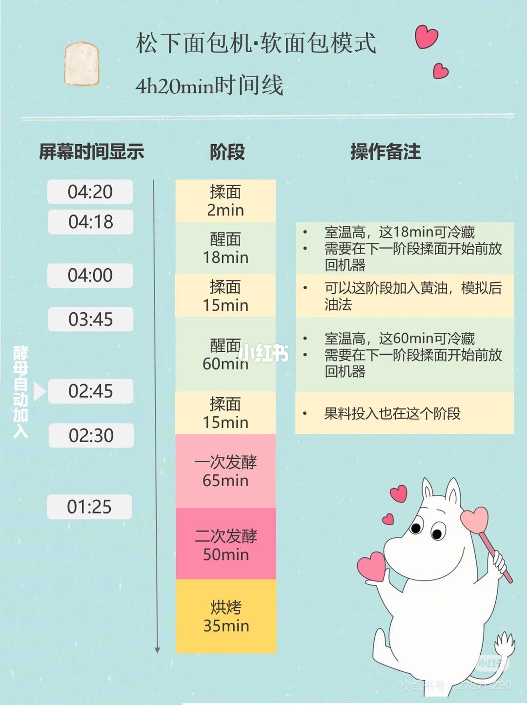
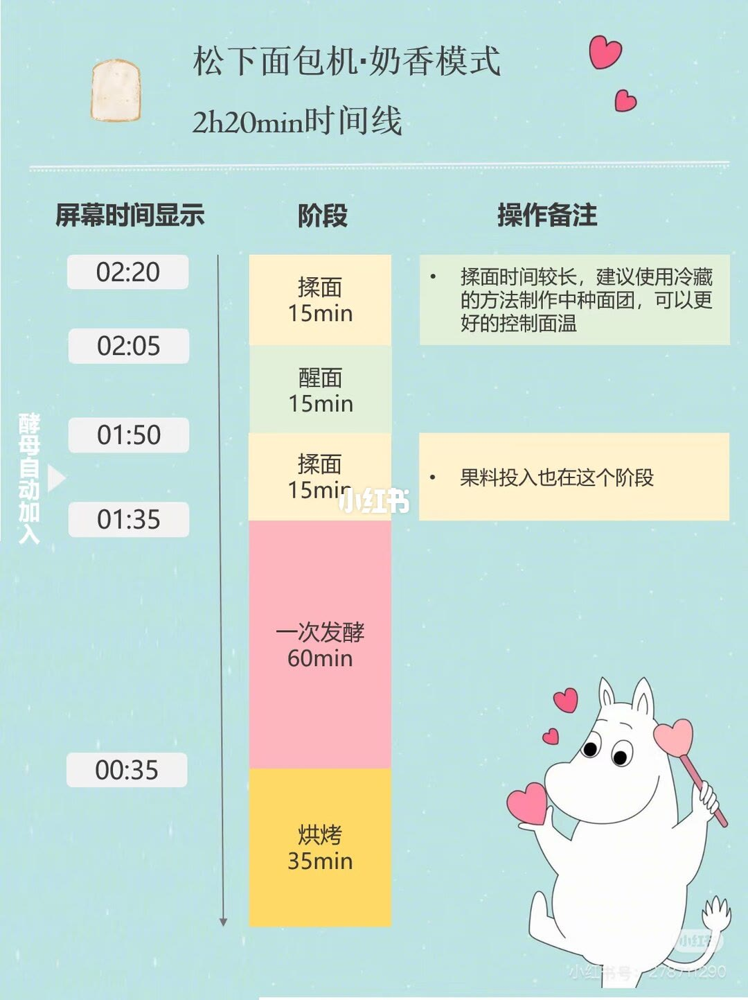

图文实录 · 小红书 · 范机灵_JENNY
松下面包机软面包/奶香吐司模式时间线
软面包模式屏幕从 04:20 倒计时，奶香模式从 02:20 倒计时；加黄油、冷藏醒面和投果料都卡在图上写明的那几段揉面或醒面里。
1/2
软面包模式，总长 4 小时 20 分
页题是「松下面包机·软面包模式」，副题「4h20min时间线」。表头三列：屏幕时间显示、阶段、操作备注。屏幕数字是剩余时间，往下变小。
04:20 揉面 2 分钟，备注空。04:18 醒面 18 分钟：室温高时这 18 分钟可冷藏，并且要在下一阶段揉面开始前放回机器。04:00 揉面 15 分钟：可以在这阶段加黄油，模拟后油法。03:45 醒面 60 分钟：同样写室温高可冷藏，下一阶段揉面前放回。02:45 揉面 15 分钟：果料投入也在这个阶段。02:30 一次发酵 65 分钟。01:25 二次发酵 50 分钟。最底下是烘烤 35 分钟；这一行左侧的屏幕时间看不清，无法确认。按上一行 01:25 减去 50 分钟会落到 00:35，那是推算，不是图上读到的字。
图左侧有竖排「酵母自动加入」。字块大致落在 03:45 到 02:30 这一带，箭头尖端具体指哪一分钟无法确认。说明里写这是作者自存、转载自小车车儿，并提醒投料和整形的时间要记好。整形时刻图上没有单独一行，和说明不完全重合；时间数字以这两张表为准。

2/2
奶香模式，总长 2 小时 20 分
页题是「松下面包机·奶香模式」，副题「2h20min时间线」。列和上一页相同。说明写的是「奶香吐司模式」，图上标题是「奶香模式」，用词不完全一样，阶段表以图为准。
02:20 揉面 15 分钟。备注：揉面时间较长，建议用冷藏的方法制作中种面团，可以更好地控制面温。02:05 醒面 15 分钟，备注空。01:50 揉面 15 分钟：果料投入也在这个阶段。01:35 一次发酵 60 分钟。00:35 烘烤 35 分钟。图上没有读到二次发酵，也没有读到结束时的 00:00。
左侧同样有竖排「酵母自动加入」，字块大约落在 02:05 到 01:35 之间，尖端指到哪一格无法确认。这一页没有写加黄油，也没有写醒面可冷藏。

汇总
先对模式，再对屏幕剩余时间
结论：两种模式不能共用一张时间表。软面包从 04:20 起，有三段揉面、两段醒面、两次发酵和 35 分钟烘烤（1/2）；奶香从 02:20 起，两段揉面、一段 15 分钟醒面、一次 60 分钟发酵，再到 00:35 烘烤 35 分钟（2/2）。投果料都在后一段揉面。边界：这是笔记里两张程序表的读法，不是松下每一台、每一种菜单的通则；软面包烘烤行的屏幕起点无法确认，酵母箭头的精确分钟也无法确认。说明里的「整形时间」图上没有单独标出。